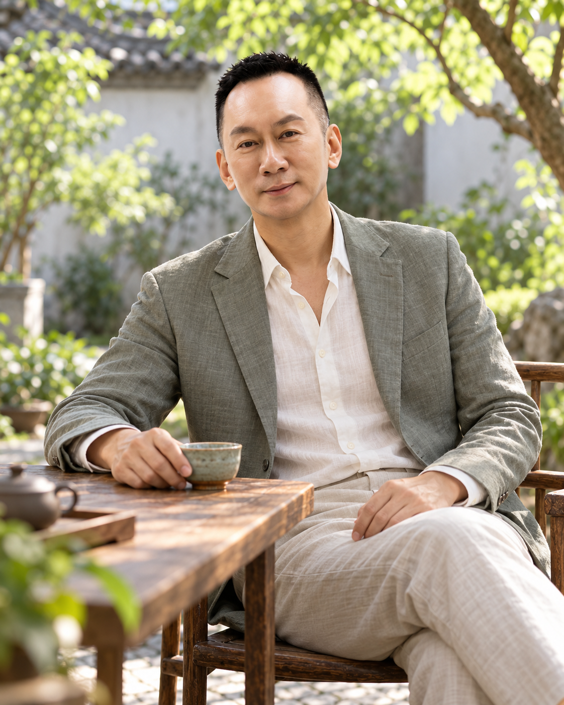

以慈悲，理解人。
以佛教的慈悲與觀照為閱讀起點。先看見情緒，再決定如何回應；少一點苛責，多一份理解。
閱讀佛學觀照 ↗佛道之間，生活之中
人生最好的修行，
不是把世界變成自己喜歡的模樣，
而是世界無論如何變化，自己仍然守得住本心。
—— 王光耀〈心有太極，自見明月〉
心有太極
自見明月
一念清明，萬事從容
向內看見自己。向外善待他人。
把讀懂的道理，活成做得到的日常。
THREE WAYS, ONE DAILY LIFE
從不同的思想出發，
回到同一個真實的自己。
以佛教的慈悲與觀照為閱讀起點。先看見情緒，再決定如何回應；少一點苛責，多一份理解。
閱讀佛學觀照 ↗從《道德經》的謙下與知止獲得啟發。分辨能做與不能強求的事，把力量留給真正值得的地方。
閱讀道家生活 ↗修心不只是安靜，也在每一次相處與選擇裡。對人保有溫度，對事堅持原則，讓智慧落地。
閱讀入世領導 ↗佛教與道教各有不同傳承；本站以個人閱讀與生活反思交流，不將兩者視為同一套教義。《道德經》為此版的道家閱讀起點，不代表涵蓋道教全部信仰與實踐。
WORDS TO RETURN TO
一篇文字，一個提醒。
不急著找到所有答案。
佛學觀照 王光耀・修心札記
心裡有情緒，不代表一定要讓情緒替自己說話。停一停，是為了看清楚下一步。
入世領導 王光耀・修心札記
善意不是替所有人承擔一切，而是在理解之後，仍然把界線說清楚。
Facebook 文章以主題與編輯摘要整理，點選連結閱讀原文；個人生活反思不等同經典原文或宗教教義定論。
顯示全部 8 篇札記
A MOMENT FOR YOURSELF
不用急著改變此刻的感受。
用一分鐘，留意腳下、肩膀，以及自然的呼吸。
這是一般生活停頓練習，不是宗教儀軌或醫療處置。若感到不適，可隨時停止。
不必追趕，先回到當下。

LOUIS WANG
這裡是個人品牌入口之外，一處可以慢下來的地方。從已分享的領導、人才與人生文字出發，嘗試讓佛道思想成為回看自己的一面鏡子。
不以玄妙取代思考，不以信仰迴避責任。關心的始終是：面對不同的人、不同的立場，我們能否依然守住尊重、責任與誠信？
王光耀 Louis Wang
閱讀更多文章與影像故事 ↗READ WITH RESPECT
經典原文、傳統詮釋與個人體悟應分開看待。本站分享個人閱讀與生活反思，不以宗教師、法師或任何宗派代表自居。